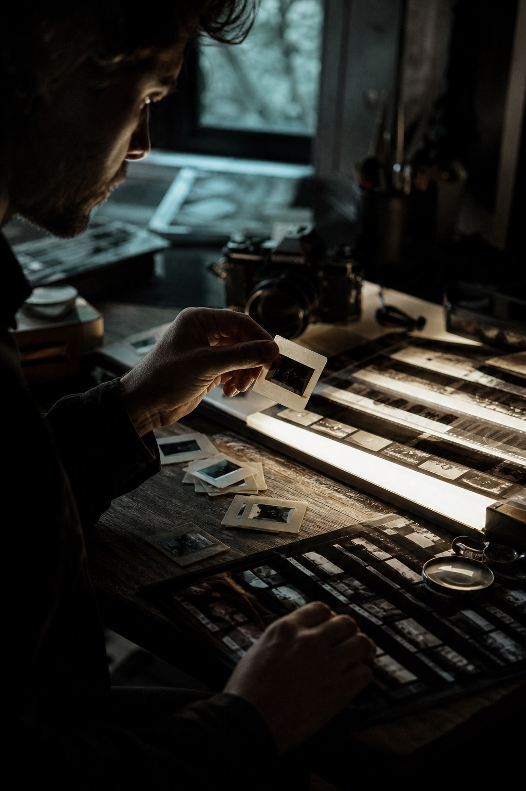

BYOND by BSI
Leading design for the mobile banking super-app: onboarding, daily transactions, and the design system that keeps 40+ screens consistent.
Heyitsilham

Currently at Aleph Labs (part of AKQA) as a Senior Product Designer, based in Jakarta and working on large-scale digital products.
Most of my 6+ years in product design have been focused on banking and telco, with work for BRI, BSI, Maybank, and Telkomsel. I spend most of my time untangling complex flows, piecing together design systems, and crafting the visual experience.
Lately, I’ve been learning to build beyond Figma through vibe coding, mostly experimenting with interactive web experiences using Three.js, WebGL, GSAP, and other creative coding tools.
Leading design for the mobile banking super-app: onboarding, daily transactions, and the design system that keeps 40+ screens consistent.
Owned the discovery and search experience. Shipped experiments that lifted conversion while cutting visual noise across the funnel.
Worked on GoPay flows — transfers, top-ups, and the little moments of trust that make people comfortable moving money.
Designed booking flows for flights and hotels, from wireframe to polished handoff, with a focus on mobile-first layouts.
Brand and web work for local studios and startups — where I learned to ship fast, talk to clients, and defend whitespace.
[Outside Design]
Away from product screens, I collect the things that sharpen how I see — quiet frames, expressive letters, night walks, and objects made with care.

Light, color, atmosphere
Type, print, details
Jakarta, neon, silence
Objects, texture, form